k-Day 141｜文明的作用
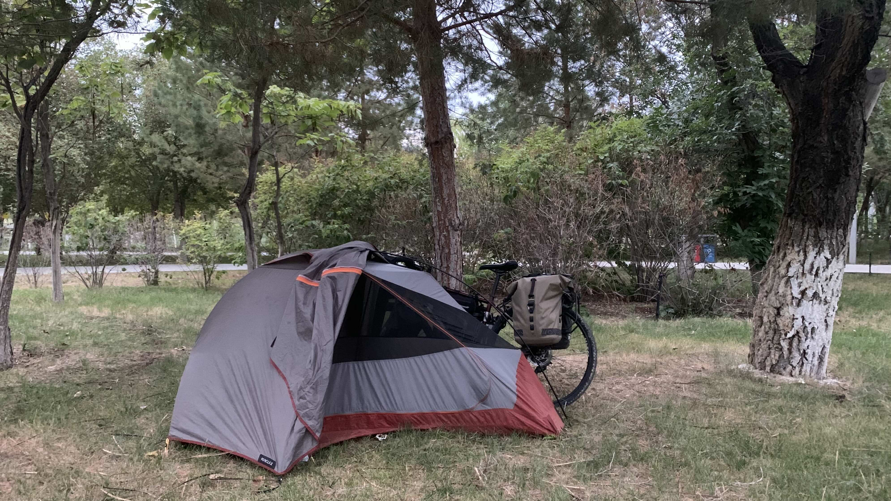
昨晚在這個角落睡覺。帳篷邊聊天的大叔們離開後公園就安靜了，降溫後晚上睡得不錯。昌吉市的環境建設相當不錯，公園腹地大，鄰近湖畔也沒有蚊蟲。
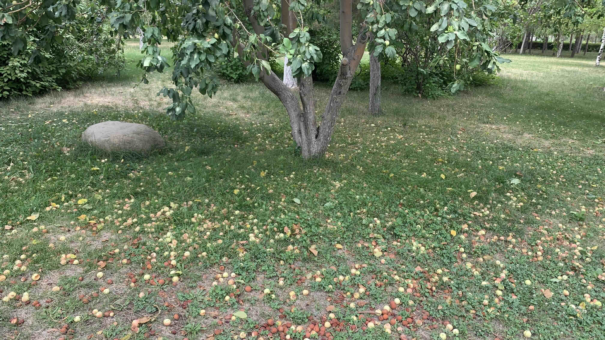
上廁所時經過公園裡的蘋果樹叢，果子掉了一地。這幾天騎車不時經過蘋果樹下，看來不需要擔心營養問題了
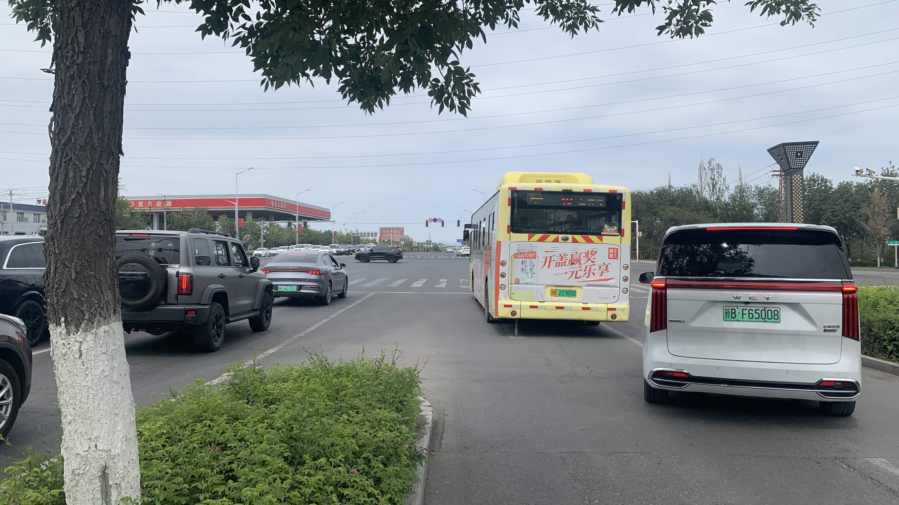
還沒離開市區，照片中的公車趁等紅燈時停在我旁邊，司機從車窗探出頭問：「不累嗎？從哪裡騎過來的呀？」
問完對我後比了一個讚。
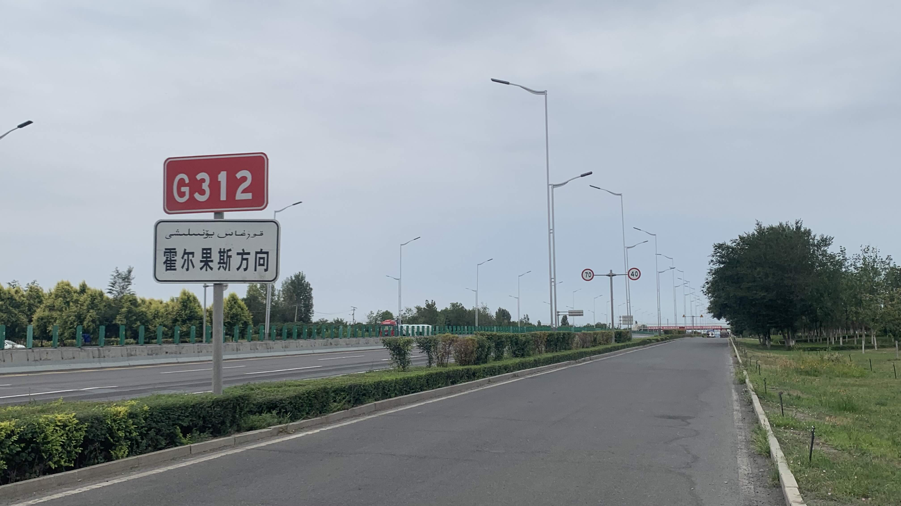
看到標示著哈薩克與中國接壤的口岸「霍爾果斯」的路牌。距此地五百多公里，沒有山路起伏，約莫一週就能抵達。可惜經過多方詢問，始終沒有獲得台灣護照能夠從陸路通關的正面消息。
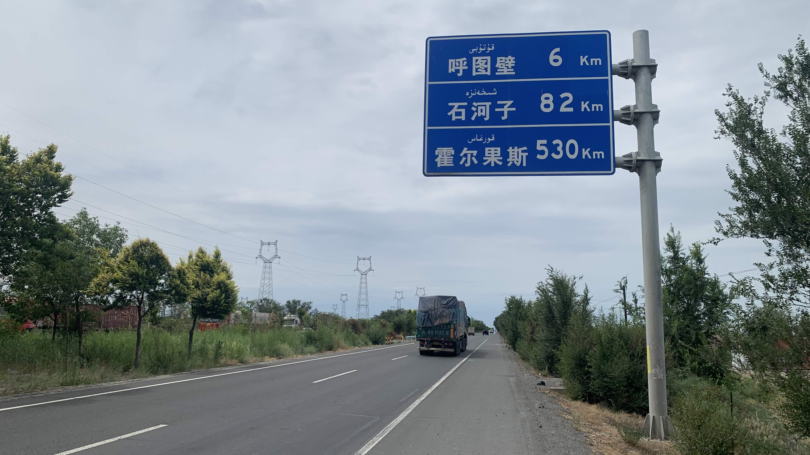
下午三點左右，距離呼圖壁六公里，是時候找點午餐吃。
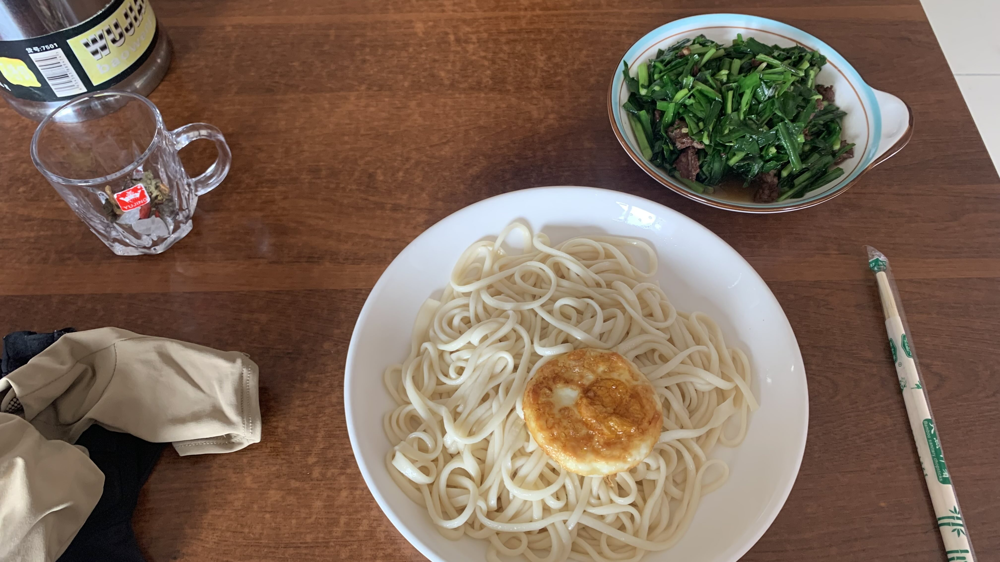
走進一家看來較順眼的餐廳，點一份韭菜肉麵，韭菜份量相當驚人啊！
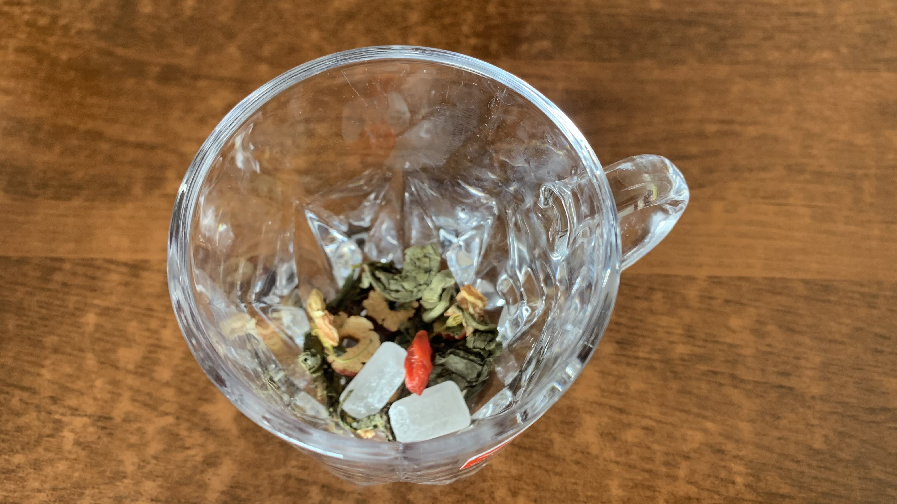
附上的玻璃杯裡面有茶葉、紅棗、冰糖等各種配料，據說往南薑的路上，只要是維族老闆開的店，每一家的茶配方都不一樣，這家是我目前喝到最豪華的。
其實肚子還是相當不舒服，吃了幾口又開始痛起來。不想浪費食物，花了一小時把麵吃完。走回太陽下牽車，老闆問我要不要在裡面休息。
今天不需要趕路，當然是開心地走回餐廳遮陽。
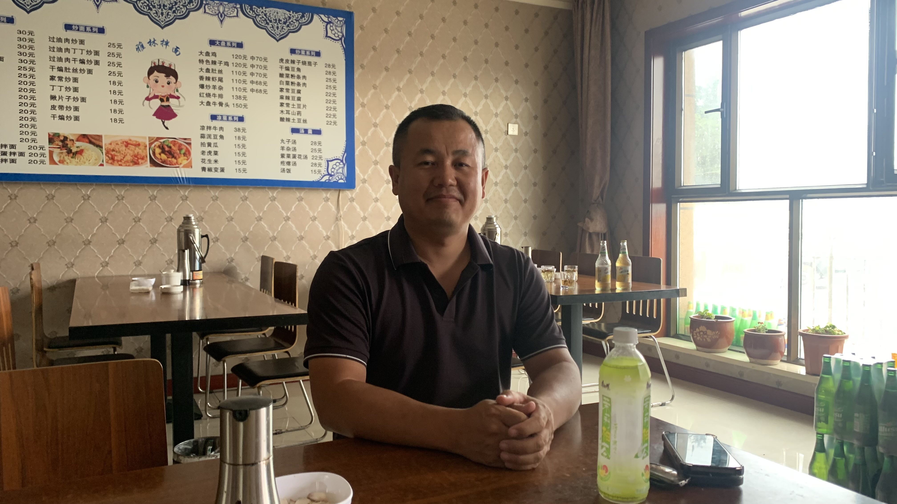
找我回去的是照片上的這位，帶著兩個小女兒到哥哥的餐館吃飯。哥哥拿了一瓶冰綠茶給我，就這樣坐著聊起來。
兄弟倆都是八零年代出生的，對於台灣的藝人諸如王傑、齊秦之類的相當熟悉。輕鬆地聊了幾句，弟弟轉了話題問我：「是什麼樣的心境讓你決定開始這趟旅行？」
「我想了解不同地方人類的精神。」
聽到這句話，弟弟眼睛突然亮了起來。
從進門後就觀察到他們兄弟倆一直沒有叼菸、抖腳、吐痰的動作，因此試探性問了他們是不是本地人。果不其然兩人都是新疆穆斯林，那就不能不抓緊機會了解他們對於新疆現況的想法。
弟弟感覺是讀過書的，開口就搬出杭亭頓的文明論。
「中國正在和其它這些文明走完全相反的道路。」弟弟說完又補上一句：「你沒有長期生活在這裡，是不會理解這些現象是怎麼產生的。」
很遺憾我不認為自己的肉身仍身處於新疆的此刻，能夠毫無顧慮的將聊天內容記錄下來。即便我離開此地，他們也仍是本地人。
在餐廳裡聊到六點，告別了兄弟兩人和餐廳的人們，今天晚上要住的地方叫「瑪納斯」。
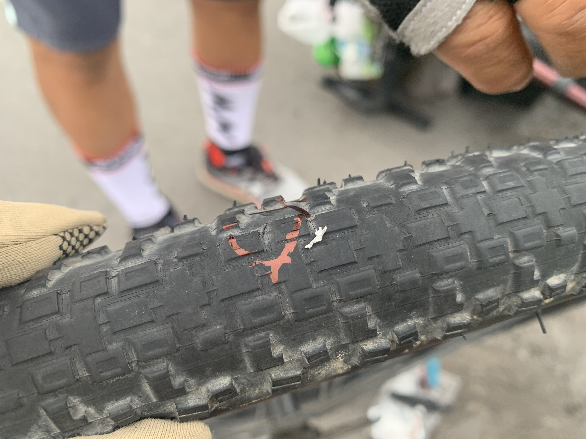
開心上路沒多久就爆胎了，牽著車到國道護欄邊，卸下行李和後輪。外胎和輪框緊緊地黏在一起，過程中無數的卡車駛過，甚至還看到三輛自行車。
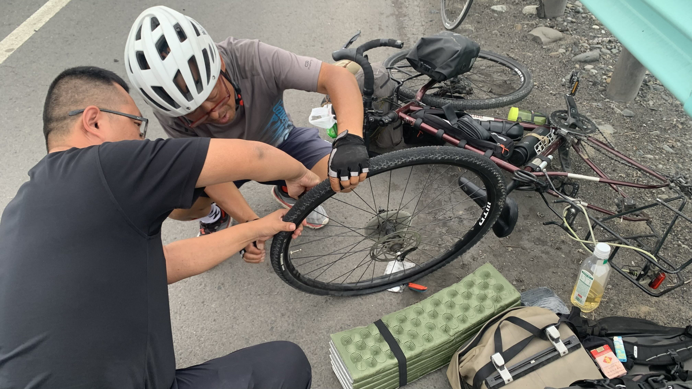
其中一輛自行車停下來，是位要前往霍爾果斯的大叔。大叔也無法使輪胎分離，剛剛經過的開車載客的大哥特地繞回來，兩人協力搞了許久，終於拉出被刺破的內胎。
「你這內胎怎麼那麼細？！」自行車大叔驚訝地問，一邊將內胎遞給開車的大哥。
「你這內胎怎麼那麼細？！」開車大哥重複了一次大叔的驚訝。
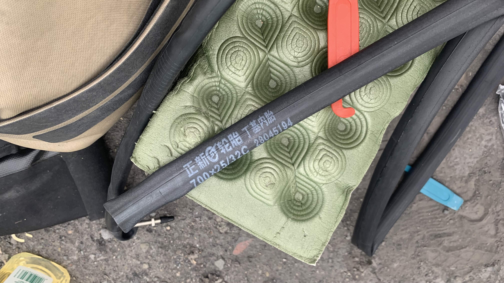
我接過內胎，看了看印刷的規格，25-32c......二十三號的外胎是40c，而烏魯木齊的美利達技師在換胎時把這條內胎塞進輪框裡。
明知我要往獨庫空路騎上天山，明知中間可能沒有自行車行，明知附近就有另一間捷安特，如果沒貨大可以告知我，讓我牽著二十三號到捷安特換胎。
在我內心剛要燃起熊熊烈火時，幫我換胎的大哥和大叔已經成功將新的內胎塞進輪框。大叔趕著到石河子，交代了開車大哥如何協助我裝上後輪就匆匆離開。
兩人費勁地裝上後輪，重新掛上行李後，大哥叫我等等，看著他回到車上拿了四瓶水和一包衛生紙下車，走回來說：「這些你可以帶在路上。」
「洗洗手吧！」他扭開自己手上的那瓶康師傅礦泉水，兩人用水簡單清洗了滿是油污的手指。
幫大哥拍個紀念照，離開後繼續趕路。
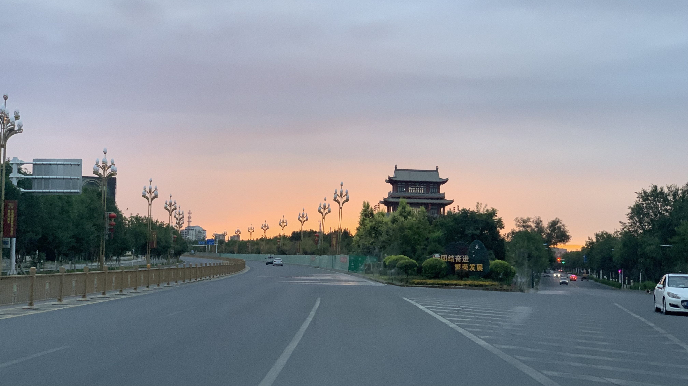
晚上九點五十分抵達瑪納斯。
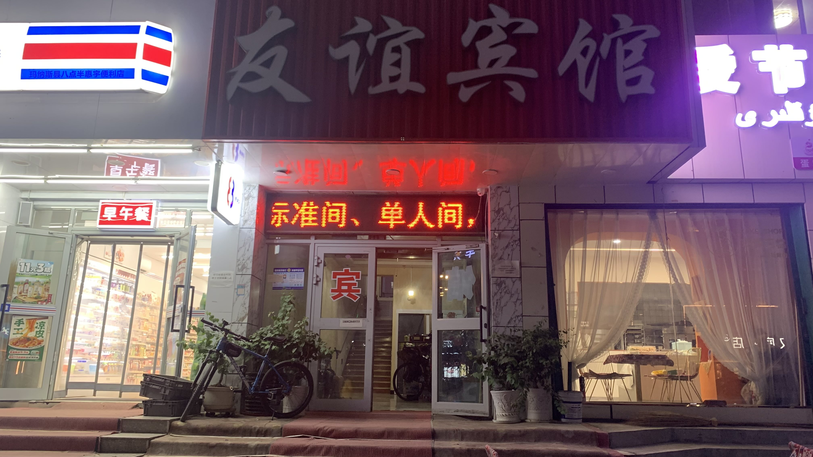
地圖上標記了一間較便宜的住宿，推著車抵達時天色已經暗了。
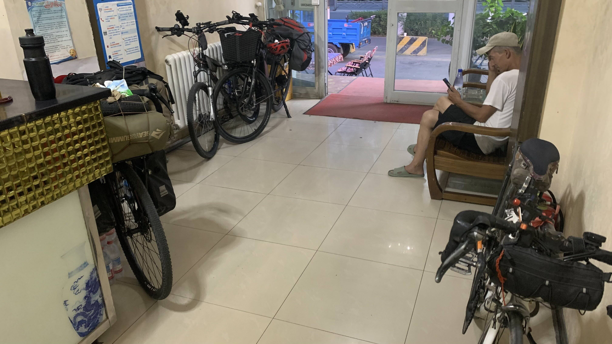
大廳停了許多自行車，二十三號也靠在角落。其他自行車的主人似乎也都是要往口岸前進的。
今日花費：韭菜麵 20元、住宿 85元